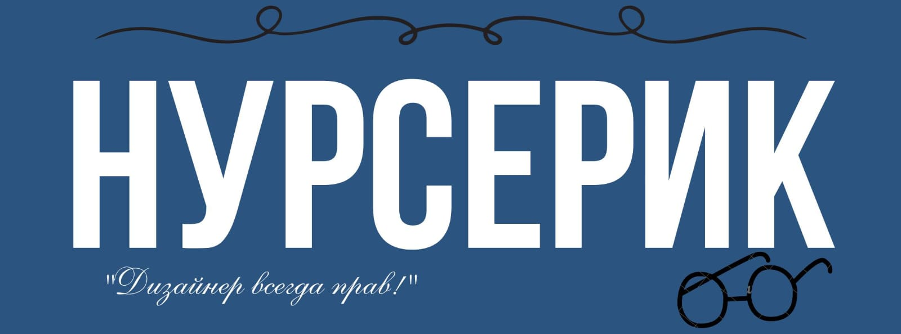
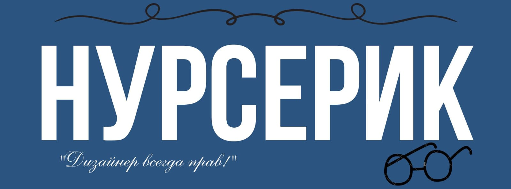
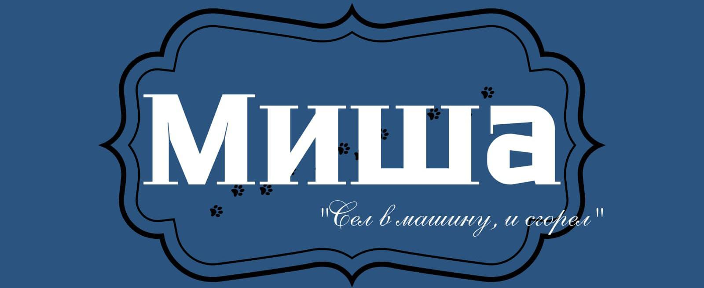
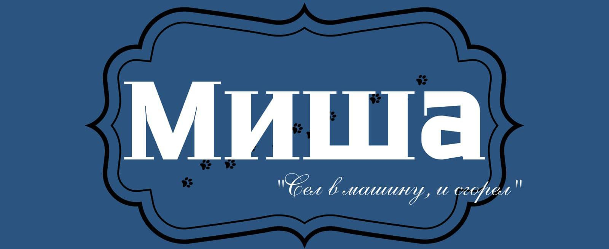
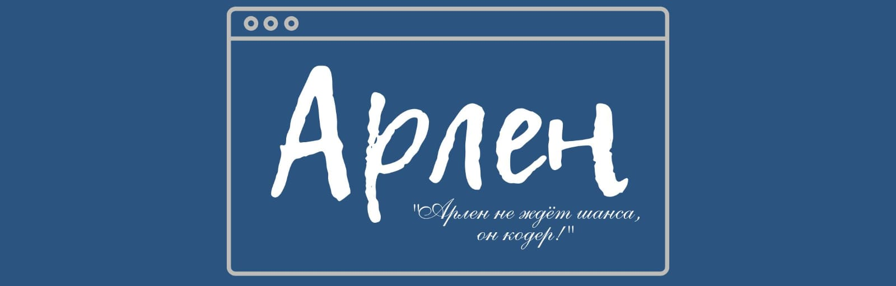
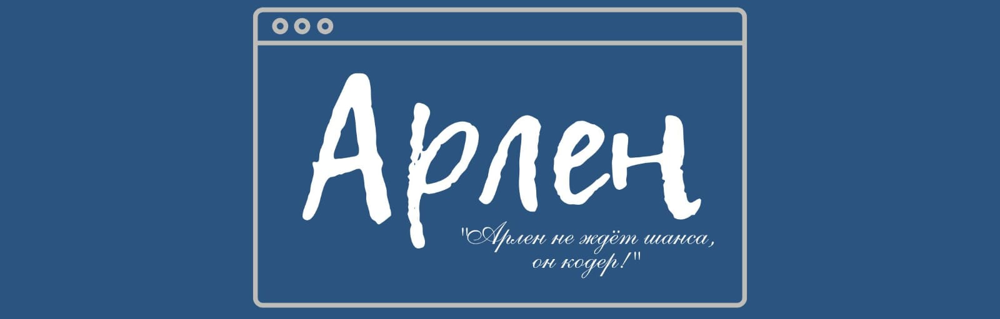

Nurserik is the graphic designer of the FLL team and is responsible for the entire visual style of the project: from the logo to presentations, posters and design for social networks. He strives to make the project vivid and memorable, realizing the dreams of the team.


Anesh is the SMM. She promotes her team on social media. This means that she designs and maintains the team's pages on platforms such as Instagram so that as many people as possible can learn about their project and achievements.
 

Misha is a nozzle designer on the FizTex team. He is responsible for designing and assembling special modules that help the robot perform tasks in the field. Misha thinks through every detail to ensure that the design is reliable, lightweight, and functional. His engineering approach is truly impressive!
 

Arlen is the team's programmer. He writes code to ensure that the robot performs tasks accurately in the field. Arlen is skilled at finding errors quickly and suggesting effective solutions. He has a passion for technology and is always eager to learn new things.


Baurzhan is the chief designer of the FizTex team. He develops mechanical solutions that ensure the robot works reliably and accurately. His approach combines engineering precision, functionality, and innovation, helping the team overcome challenges and reach their goals.


Katya is the captain of the team. She is responsible for the organization of work: planning, assignment of responsibilities and control over the fulfillment of tasks. She also makes sure that the team moves towards the goal clearly and smoothly.